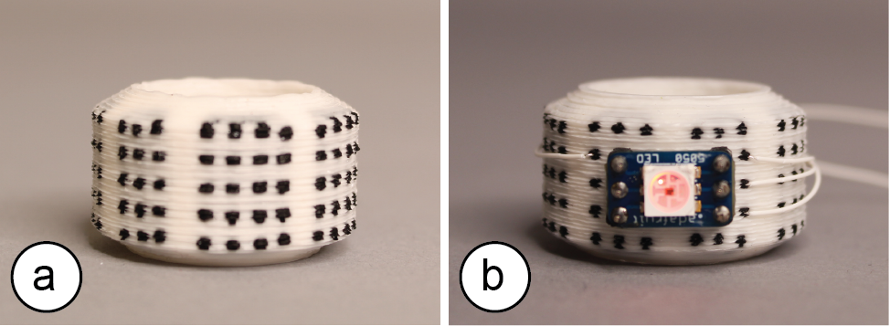
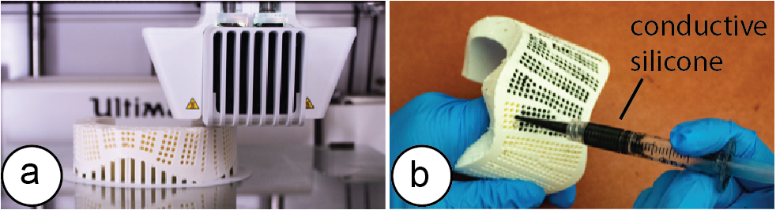
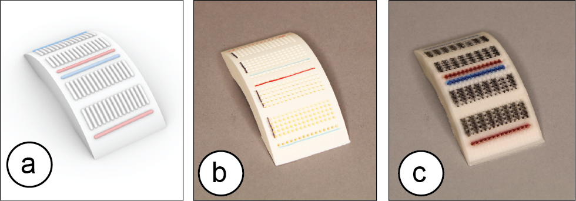
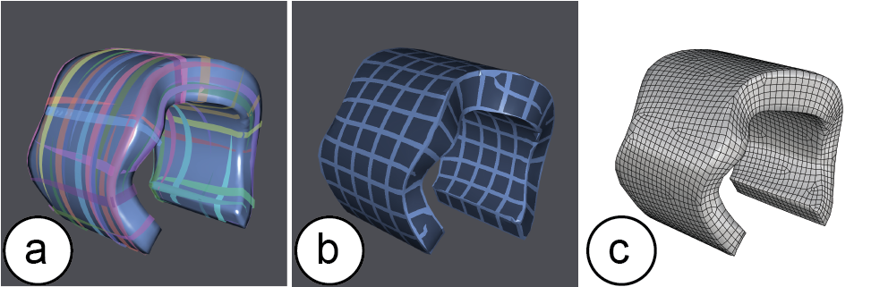
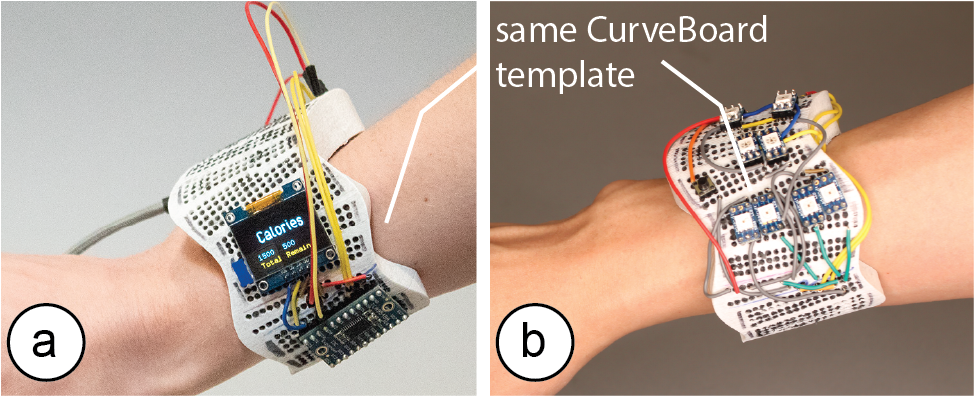
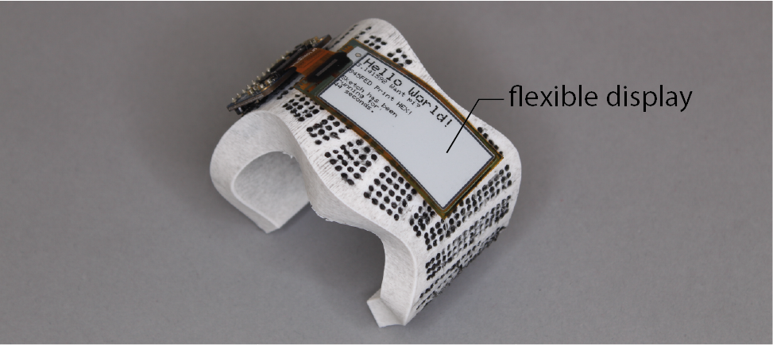

Publication
Junyi Zhu, Lotta-Gili Blumberg, Yunyi Zhu, Martin Nisser, Ethan Levi Carlson, Xin Wen, Kevin Shum, Jessica Ayeley Quaye, Stefanie Mueller.
CurveBoards: Integrating Breadboards into Physical Objects to Prototype Function in the Context of Form
In Proceedings of
CHI ’20.
DOI
PDF
Video
Video
Press


CurveBoards: Integrating Breadboards into Physical Objects to Prototype Function in the Context of Form

Figure 1. (a) CurveBoards are 3D breadboards directly integrated into the surface of physical objects. (b) CurveBoards offer both the high circuit fluidity of breadboards, while maintaining the look and feel of prototypes.
CurveBoards are breadboards integrated into physical objects. In contrast to traditional breadboards, CurveBoards better preserve the object’s look and feel while maintaining high circuit fluidity, which enables designers to exchange and reposition components during design iteration.
Since CurveBoards are fully functional, i.e., the screens are displaying content and the buttons take user input, designers can test interactive scenarios and log interaction data on the physical prototype while still being able to make changes to the component layout and circuit design as needed.
We present an interactive editor that enables users to convert 3D models into CurveBoards and discuss our fabrication technique for making CurveBoard prototypes. We also provide a technical evaluation of CurveBoard’s conductivity and durability and summarize informal user feedback.
Introduction
Breadboards are widely used in early-stage circuit prototyping since they enable users to rapidly try out different components and to change the connections between them [23].
While breadboards offer great support for circuit construction, they are difficult to use when circuits have to be tested on a physical prototype. Since breadboards are box-like shapes, they distort the look and feel of the prototype when attached onto it and can interfere with user interaction during testing. In addition, they limit where electronic components can be placed on the prototype since the area for circuit construction is limited to the size of the breadboard.
One workflow to better preserve the look and feel of the prototype is to solder components onto a protoboard or to fabricate a PCB. However, this requires designers to give up circuit fluidity since all components are fixed in place. Trying out different components and changing connections between them can no longer be done without additional soldering. Alternative methods, such as taping the components onto the prototype, offer more flexibility; however, they make it difficult for designers to exchange and rewire parts and do not offer the same circuit building support as breadboards.
In this paper, we present a new electronic prototyping technique called CurveBoard that embeds the structure of abreadboard into the surface of a physical prototype (Figure 1). In contrast to traditional breadboards, CurveBoards better preserve the object’s look and feel while maintaining high circuit fluidity, which enables designers to exchange and reposition components during design iteration.
Since CurveBoards are fully functional, i.e., the screens are displaying content and the buttons take user input, designers can user test interactive scenarios and log interaction data on the physical prototype while still being able to make changes to the component layout and circuit design as needed.
CurveBoards are not thought to replace existing techniques, such as breadboards or PCBs, but rather provide an additional prototyping technique for early stage interactive device experimentation. CurveBoards work particularly well during mid-fidelity prototyping when designers have already tested basic electronic functionality and in a next step want to work on the interaction design, i.e. integrate electronic parts within the context of a prototype form as part of interactive design practice [26].
In summary, we contribute:
- a new electronic prototyping technique for early stage interactive device experimentation called CurveBoard
- a demonstration of its applicability across different application scenarios & object geometries at the example of five interactive prototypes
- an interactive editor for converting 3D models into CurveBoards including different options for the channel layout
- a fabrication method for CurveBoards that uses 3D printing for the housing and conductive silicone for channels
- a technical evaluation of conductivity & durability
- an informal user evaluation with six users who used CurveBoard to build interactive prototypes
- an algorithm for automatic pinhole and channel generation given the specific curvature of a 3D model
- a discussion of extensions of our approach, including the use of CurveBoard templates and flexible electronics
CURVEBOARDS
The main benefit of CurveBoards is that they allow designers to iterate on the interaction design of a prototype directly in the context of its physical shape. Using CurveBoards, designers can quickly exchange and reposition components on the prototype’s surface. Once rewired, the prototype is fully functional, i.e. screens on a CurveBoard display content and buttons take user input.
By enabling designers to prototype electronic circuits directly on a physical prototype, CurveBoards are particularly suitable for: (1) finding ergonomic and efficient component layouts, (2) ensuring that the components fit onto the physical prototype, (3) preserving a prototype’s look and feel while iterating on a visual design, (4) preserving an object’s intended function while testing a circuit, and (5) identifying component needs based on the prototype’s form factor.
In the next section, we illustrate each of these use cases at the example of prototyping an interactive device.
#1 Finding Efficient and Ergonomic Component Layouts
For interactive devices, the placement of I/O components plays an important role in achieving efficient and ergonomic interaction. The design of wearables is particularly challenging since I/O components have to be placed with respect to the user’s body and the way the wearable device is worn.
Figure 2 shows this at the example of headphones with built-in speakers and music streaming capabilities, for which we explore the placement and type of menu controls to optimize for user’s arm reach and ability to distinguish controls.
Our initial version of the prototype had the volume controls on the side of the user’s dominant hand and the playlist controls on the non-dominant hand. After analyzing the logged interaction data recorded on the micro-controller over the course of a day, we realize that the playlist controls are being used more often than the volume controls. We therefore move the playlist controls to the side of the dominant hand.
In addition, users informed us that it was difficult to distinguish between the volume and channel controls since they both used press input with similar button sizes. To avoid wrong user input, we replaced the volume buttons with a dial.

Figure 2. Finding efficient and ergonomic I/O layouts for a pair of headphones.
#2 Ensuring that Components Fit onto the Prototype
When prototyping on a traditional breadboard, it is difficult for designers to estimate if all components will later fit onto the physical prototype. A physical design, especially when small or filigree, can limit which types of interactive components can be used and where they can be placed, which is an important part of interaction design.
Figure 3 shows this at the example of an interactive bracelet with display and button for menu control, a photoresistor and LED for heart rate monitoring, and an IMU for step counting. While prototyping directly on the bracelet, we notice that the large display that we initially selected does not fit on the slender bridges of bracelet, we thus exchange it for two smaller ones. After testing different button sizes on the bracelet prototype ranging from 2.3mm to 16mm, we find that the 7mm button fits best while providing the largest interactive space among other different options. We next add the LED and photoresistor and make sure they can be positioned together and offer enough space for users to place their finger. Finally, we exchange the wider IMU with a slimmer one, and replace the larger microcontrollers with two smaller ones.
While some components, like micro-controllers, can be made more compact in later design iterations via custom PCBs, user-facing I/O components (buttons, displays) will be similar in size since they relate to user’s physical characteristics, such as finger sizes and what the human eye can see.

Figure 3. Upon the available space on the prototype, we iterate designs with the exchange of large OLED display with two smaller ones, and add selected push button & DIP LED.
#3 Preserving “Look” and “Feel”
When prototyping visual designs, such as a piece of interactive jewelry, it is difficult for designers to get a sense of the overall look and feel when using a breadboard that significantly distorts the prototype’s shape. CurveBoards, in contrast, allow designers to integrate the components directly on the prototype’s surface, which better preserves the shape..

Figure 4. The look and feel of this interactive ring is preserved since the pinholes are directly integrated into its geometry.
Figure 4 shows this at the example of an interactive ring for which we iterate on the placement of LEDs. Since in our CurveBoard the pinholes form a part of the object geometry, no additional space is needed for them. We try different LED arrangements and based on how the ring looks on our hand, we decide to use multiple LEDs in a row rather than side by side. Note that while CurveBoard better preserved the shape, the pinholes are still visible and impact overall aesthetics.
#4 Preserving an Object’s Intended Function
Traditional breadboards add volume to an interactive object, which can hinder its intended function. For instance, a frisbee may not fly anymore since its shape is no longer aerodynamic, a ring may no longer fit on a user’s hand, and a teapot may not be able to hold the same amount of liquid inside.
Figure 5 shows this in more detail with the example of an interactive frisbee that displays a light pattern when thrown. Prototyping this frisbee with a breadboard attached to its surface would make the frisbee dysfunctional, i.e. it would not fly anymore. CurveBoard, in contrast, preserves the shape of the frisbee and thus its function. Our frisbee design initially contained a microcontroller and an IMU for sensing when the frisbee is in motion. We then iterated on different LED layouts until we settled on the one shown in Figure 5b.

Figure 5. CurveBoard keeps this frisbee functional, which allows us to test the appearance of different light patterns: (a) circular design, and (b) POV “CHI” design when thrown.
#5 Identifying Component Needs
Brainstorming interactive functionality without considering the physical form can be challenging for a designer, who is left with an abstract circuit on a breadboard. The direct, hands-on interaction with a prototype, in contrast, supports exploration, which enhances creativity and can help designers to envision interactive workflows and to identify the components needed to realize them [28]. In addition, since certain object geometries can affect component placement (e.g., high curvature may prevent access to movable elements like knobs or sliders [12]), brainstorming in the context of shape also allows to take such challenges into account.
Figure 6 shows this via the Utah teapot example for which we want to visualize its inside liquid temperature. After trying different display and temperature components on the teapot, we realize that the temperature is also needed for the teapot handle as an indicator to show if it is safe to hold. Since the tea handle is too small for another OLED display, we instead add one RGB LED onto the handle that displays either red or blue color to indicate the hot/cold. Later on, we decide to add a camera module on the inside of the lid to detect the tea concentration so that we know exactly when the brewed tea reaches the best saturation based on our preferences.

Figure 6. Here we brainstorm interactive functionality for the Utah teapot: (a) camera and display to monitor tea shade, and (b) LED and display to indicate temperature.
INTERACTIVE EDITOR FOR CREATING CURVEBOARDS
To support designers in creating CurveBoards from their digital prototype designs, we developed an interactive editor. After loading the 3D model of the prototype, our editor first generates the pinholes across the model’s surface. Next, designers connect the pinholes into a desired channel layout using either the automatic or manual layout tools. Once the layout is completed, our editor automatically generates the channel geometry and provides the fabrication files.

Figure 7. (a) CurveBoards interactive editor UI, (b) Example of a generated pinhole pattern.
#1 Converting the 3D Model into a Set of Pinholes
Designers start by loading a 3D model into the CurveBoard editor. Next, designers click the ‘generate pinholes’ button, which creates the characteristic pinhole pattern across the surface of the board (Figure 7).
#2 Creating the Board Layout
Next, designers create the board layout, i.e. define how to connect the pinholes into power and terminal lines. Similar to 2D breadboards that have a fixed row and column layout that cannot be modified dynamically, CurveBoards are also subject to this limitation once the board is fabricated. However, besides the standard breadboard layout that the CurveBoard editor can generate automatically, designers can also modify the layout manually depending on their prototyping needs, or for maximum flexibility leave all pinholes on the board disconnected, effectively creating a Curve-Protoboard.
Automatic Channel Layout: This method automatically generates a default breadboard layout across the surface of the 3D model. It requires minimal effort from the designer but also pre-defines how components can be placed (Figure 8a). Users can explore different versions of the automatic layout with different channel orientations on the object geometry by pressing “Generate Board Layout” button multiple times.

Figure 8. (a) Automatic layout, (b) manual layout.
Manual Channel Layout: Alternatively, designers can customize the automatic layout or create a new manual layout from scratch using the interactive tools for terminal and power line creation. Designers only have to select a set of pinholes and then indicate the desired type of connection using the corresponding button. This provides designers with more freedom in how to route the channels but comes at the expense of additional manual effort (Figure 8b).
No Channel Connections (Curve-ProtoBoard): Finally, designers also have the choice to leave all pinholes disconnected, effectively creating a Curve-Protoboard. The holes for a Curve-Protoboard are bigger in diameter (1mm vs. ~0.3mm for Curveboards) and fit both a component’s header pin and a wire. While this provides maximum flexibility, it requires additional wiring while prototyping.
#3 Export & Fabrication
Once designers hit the ‘export’ button, the CurveBoard editor generates the final CurveBoard geometry containing all the pinholes and connection channels underneath the CurveBoard’s surface (Figure 9). The CurveBoard editor then exports the geometry as an .stl file for 3D printing.

Figure 9. Generated 3D printable file: (a) in render mode, and (b) in transparent ‘ghost’ mode.
FABRICATION METHOD OF CURVEBOARDS
In the next section, we describe the fabrication technique used for CurveBoards and provide details on the material preparation and mixing procedure.
Dual Material 3D Printing with Conductive Rubber
Our initial goal was to use dual-material 3D printing to fabricate CurveBoards, with one rigid non-conductive material used for the housing and a deformable conductive material (e.g., conductive rubber) used for the channels to facilitate repeated plugging of components.
Since dual-material 3D printing with conductive rubber is still an experimental fabrication technique, we used the external printing services from ACEO, which is the only company we found to offer this type of fabrication (materials: ACEO Silicone GP White for the housing, and ACEO Silicone EC for the conductive rubber, Shore Hardness 30 A).
We developed a range of 3D printed object geometries to test with their printing service, including different channel widths ranging from 0.6-1.5mm. However, we found that even the best of our prototypes still had a resistance of 1.4k ohm per channel (6-hole length). Thus, while the resistance was good enough to light up an LED (see Figure 10 for the 3D printed result), it was not conductive enough to work with other standard electronic I/O components. In addition, the maximum volume currently supported by the 3D printer is 200 cm3, with resolution ~1 mm to achieve reliable prints. Therefore, we conclude that dual-material 3D printing it is not yet suitable for fabricating CurveBoards.

Figure 10. (a) Dual-material silicone 3D printed CurveBoard, and (b) with SMD LED connected.
3D Print Housing + Fill with Conductive Silicone
To address this issue, we developed a fabrication technique based on 3D printing the housing and filling the channels with conductive silicone (Figure 11). It enables high conductivity at the expense of additional manual effort (filling the channels for a CurveBoard takes between 15-30min based on our experience building the prototypes for this paper).

Figure 11. (a) 3D printing the CurveBoard housing. (b) Filling the hollow channels with conductive silicone.
We next provide more details on both the 3D printing process and the task of filling the channels with conductive silicone.
3D Printing: For 3D printing, we used FDM 3D printers and printed on both the Ultimaker 3 and Prusa i3 MK2. We tried layer heights from 0.1mm-0.2mm and found that all created CurveBoard housings with channels that were suitable for filling them with conductive silicone. The prototypes in this paper were printed with a layer height of 0.15mm.
Conductive Silicone for Channels: To find a material mix that is both conductive and easy to extrude, we tested a range of different carbon fiber lengths, carbon-silicone ratios, and needle sizes.
- Carbon fiber length: The longer the carbon fibers are the more conductive the mixture is but the harder to extrude. We tried fibers ranging from 0.5mm to 2.5mm.
- Carbon-Silicone ratios: A higher carbon amount increases conductivity but makes the mixture harder to extrude. We tried ratios ranging from 3% to 10% carbon.
- Needle size: The larger the needle size, the easier it is to extrude the mixture but the more difficult it is to insert the needle into a pinhole. We tried needle sizes ranging from 20G (0.6mm) to 14G (1.55mm).
Below, we describe the mixing procedure that we empirically determined to work best for filling CurveBoards.
To create the conductive silicone, we first mixed 10g of chopped carbon fiber (0.7mm long, 7 μm diameter from Procotex [4]) with 3ml of isopropyl alcohol. After stirring and dispersing the fiber hairs, we mix them into 100g part A of a regular two-component silicone (type: Smooth-On SORTA-Clear 37 Clear [34]) and stir for 5 minutes (Figure 12a/b). The carbon-silicone ratio is 5wt%, with same amount of part B added. Without part B, the conductive silicone will not start curing, i.e. we can keep the mix of part A + carbon fiber on the shelve to use over several days if stored covered.
Once we are ready to use the silicone, we add 100g of part B (Smooth-On SORTA-Clear 37 Clear) to the mix (Figure 12c), which initiates curing. After stirring for 5 minutes, we transfer the conductive silicone to a syringe (3ml, with 16-gauge blunt tip tapered dispensing needle) (Figure 12d).
The syringe can then be used to fill the channels in the CurveBoard. Because silicone is sticky, it remains inside the channels and does not drip out even when the object is tilted. Once all channels are filled, the CurveBoard cures for 75 minutes. For CurveBoard designs with pinholes on both sides (e.g. teapot lid in Figure 6), we tape one side up to prevent leaking, and fill the conductive silicone from the other side. We clean up the residue from the surface afterwards.
Because of the light blue taint of our fast curing silicone (Smooth-On OOMOO 25, curing time: 75 mins), we used a clear, slower curing silicone for the pictures of this paper (Smooth-On SORTA-Clear 37 Clear, curing time: 4 hours).
Average Amount of Material per Prototype: We found that CurveBoards with a volume of less than 400cm3 required on average 3g carbon and 60g silicone to fill all channels.

Figure 12. Mixing the silicone.
Surface Coloring to Visualize Channel Layouts
Since we fabricated the CurveBoards in this paper using standard FDM 3D printers that do not allow for high-resolution color printing, we cannot fabricate the breadboard markers for power and terminal channel connectivity. Instead, we mark the channel layout on the CurveBoard manually using a color marker as can be seen in Figure 13b.

Figure 13. Channel Connectivity: (a) rendering in CurveBoard editor, (b) standard 3D printing with marker drawing, and (c) full-color 3D printing with Da Vinci printer.
With recent advances in full-color 3D printing, we can also use a full color printer, such as the DaVinci , to mark the connectivity (Figure 13c shows an example). However, since full color printers are significantly slower than regular FDM 3D printers due to the additional pass required to apply the color ink, we decided to not use them for our prototypes.
EVALUATION OF CONDUCTIVITY & DURABILITY
To measure the conductivity and durability of our fabrication method, we ran two experiments.
Conductivity: To measure the resistance across different channel lengths we fabricate a 16-hole long channel and measured conductivity by iteratively increasing the pinhole distance between the measurement points. Figure 14 shows the result. When a line is fitted, we can see that for every extra pin hole, resistance goes up by on average of 8.5 ohms.
From all the channels contained in our prototypes, on average >95% are short terminal channels (3-6 holes, 30-60 ohms). This result is also comparable to standard breadboards which usually have >93% terminal channels. Power channels can get long & can have higher resistance (bracelet: 16 holes, 120 ohms, headphone: 36 holes, 600 ohms, the large various of resistance in long channels is likely due to the printing quality of different CurveBoard geometries).

Figure 14. (a) Resistance for different channel lengths, (b) Resistance over 100 plugs.
We wired up a range of components and found that digital signals including PWM worked well, most analog signals (e.g., photoresistors) also worked provided the channels had a stable resistance. Even for the longer power channels, resistance was within the fault-tolerance of typical electronics.
If needed, the resistance can be further reduced using one of the following techniques: Since the resistance R is a function of the distance D and the cross-section area A of the channel (R = k*D / A; k being a material property), we can decrease the resistance by making channels wider. However, this restricts the density of channels on the breadboard and prevents the use of standard components. Alternatively, we can also make the channels deeper, but this restricts the types of objects we can create as the prototypes become thicker. Finally, to reduce resistance, designers can also split long channels into segments and use connecting wires between them.
Durability: To evaluate the durability of the silicone against repeated plugging and unplugging of components, we selected a CurveBoard channel of three-pinhole length and repeatedly inserted a wire into it. We measured the resistance of the channel after every 10 plugs. We found that the silicone has a high durability due to its self-closing characteristics when a wire is removed. Surprisingly, over repeated use the resistance also decreased (Figure 14). We hypothesize that poking the pinhole over and over packs the carbon fibers tighter, which creates a better connection with the wire.
Decay Over Time: We repeated the above experiments with conductive silicone channel bar that were 6 months old. We found no statistically significant difference in the resistance measurements (p-value = 0.577954).
EVALUATION WITH USERS
To gather feedback on designer’s experience when using CurveBoard, we ran a user study similar to the one conducted by Drew et al. for evaluating ToastBoard [8]. Note that our user study only investigates the experience of prototyping an interaction design using CurveBoard and further studies are needed to gather feedback on the CurveBoard channel layout design process and the CurveBoard fabrication.
We recruited six participants (3 female, 3 male). Experience levels for electronic prototyping ranged from moderately experienced (one participant) to very experienced (five participants). After a brief introduction, we randomly assigned participants to one of two conditions (either traditional breadboards + separate 3D printed prototype, or a CurveBoard of the same form factor as shown in Figure 15a/b). Participants completed a task sequence and then switched the condition.

Figure 15. Materials provided to participants in the (a) traditional breadboard vs (b) CurveBoard condition.
The task sequence asked participants to build an electronic circuit on the physical prototype given a schematic, a description of intended functionality, and a micro-controller that already runs working code. The participants were told which electronic components to use but not where to place them, i.e. they had freedom in determining the spatial layout of their interaction design. They were asked to optimize the layout of the I/O components for ergonomic and efficient interaction. We used two different task sequences and randomly assigned an order (both used the same form factor, i.e., the 3D model of the bracelet, but different schematics).
After each completed task, we asked participants to show us their prototype and then gave them the next task. Participants had 60 minutes per condition for finishing as many tasks as possible. The tasks were the same for all participants. Participants were not limited in terms of materials, i.e. they had several breadboard sizes including small 4x4 breadboards.
At the end of the session, participants filled out a questionnaire about what features they found helpful or frustrating, how both prototyping methods compared to each other, and what types of features they might like to see.
Findings
From all participants, 5/6 participants stated a preference for CurveBoard over the 2D breadboard. Below, we summarize additional observations and qualitative feedback:
Attaching the Breadboard to the Prototype: When using a 2D breadboard, participants used a wide variety of methods to attach the breadboard to the prototype. Most participants peeled off the backside of the breadboard to expose the sticky surface and then attached it to the prototype. One participant first applied tape across the entire bracelet and then placed the breadboard on it. Once placed, however, the breadboards were hard to move around in case additional boards had to be added to provide more wiring space for components. P2 stated: ‘I spent a lot of time with the 2D breadboards figuring out the best way to situate and attach them to the bracelet, which I didn’t have to do in the 3D breadboard use.’

Figure 16. Some Prototypes built during user study in (a) traditional breadboard and (b) CurveBoard condition.
Pre-defined Breadboard Size & Component Density: When using 2D breadboards, participants found it challenging to place electronic components close to each other. Participants stated: ‘The 2D breadboard size made it very hard when I was trying to get the OLEDs near to each other.’ (p1) ‘I tried to use as many smaller breadboards as I could to cut down on excess space.’ (p6) ‘I rotated the breadboards to have two breadboards next to each other so that 4 screens are near each other’ (p1). In contrast, when asked about CurveBoard, participants said: ‘Having space to put components all over the object was pretty useful.’ (p4) ‘The 3D Breadboard had all the wire holes already there so I didn’t need to think about where to physically place breadboards.’ (p1) ‘It was easier to move things and redesign the layout.’ (p2)
Requested Improvements: Participants requests included: (1) firmer connections when plugging wires (p2, p4), (2) the ability to customize the channel connections enabled through the interactive editor or a CurveProtoboard (p3, p4), and (3) to also have curved and flexible electronic components available to better approximate the shape (p1, p6).
IMPLEMENTATION
Our conversion software [46] is implemented as a Grasshopper plugin to the 3D editor Rhino3D.
Generating the Pinholes on the 3D Model Surface
To generate the pinholes on a 3D model surface, we first convert the 3D model into a quadmesh (Figure 17c). Each vertex of the mesh represents one pinhole candidate on the breadboard’s surface. To ensure a consistent spacing of pinholes that is required to make DIP electronic components fit, we enforce a fixed spacing between adjacent quad vertices (i.e., 2.54mm as on a 2D breadboard).

Figure 17. (a) orientation field, (b) position field, and (c) generated quadmesh
To convert the model, we use the instant meshes open source library provided by Jakob et al. [14] available on github [11]. To provide the 3D model to instant meshes, we first export the 3D model as an .obj file using Rhino3D’s export function. Next, we prepare the input arguments for instant meshes: Since we want to generate a quad mesh, we set the orientation symmetry (Figure 17a) and the position symmetry (Figure 17b) to 4. Next, we set the crease angle threshold to 90° to enforce quad alignment to sharp folds in the surface. We also set the align to boundaries parameter to true to align the edges of individual quadmeshes with the edges of the 3D model. The final input parameter target face count needs to be calculated based on the mesh geometry. For this, we use the surface area of the 3D model and divide it by the size of the desired quad, i.e. 2.54x2.54mm (=6.4516mm2), which is the standard area used by one breadboard pinhole.
Next, we pass all pre-determined parameters and the 3D model into instant meshes via a Python subprocess function call. After instant meshes calculated the quadmesh, it outputs a list of vertices of the quads (each vertex will form a pinhole), a list defining the connectivity between these vertices (representing different CurveBoard layout-connectivity options), and the converted 3D model.
Our CurveBoard editor in Rhino3D then reads the quad mesh results back, removes the old model from the viewport, and instead displays the new quadmeshed 3D model.
Specifying the Breadboard Connectivity
Each vertex of the quadmesh represents a pinhole. When users’ select the vertices using the VCC, GND, and terminal brushes, the vertices are added to a point lists (polyline) that represents the connectivity of the breadboard channels.
Generating the Geometry of Channels for fabrication
In a final step, we generate the geometry for 3D printing.
Pinholes: To create pinholes, we create a cone 4mm deep from the surface of the object at each pinhole (vertex), narrowing from 1 mm diameter at the surface to 0.8 mm at their tips to minimize channel overlap over concave surfaces. We then perform a Boolean difference operation to subtract the cone geometry from the 3D object, creating tapered pinholes.
Channels: To create the channels, we first offset the points of each pinhole on the channel inward along a vector orthogonal to the surface, which creates a polyline along which the channel will be created. At each offset point, we generate a rectangle centered on this point where the height axis is parallel to the surface normal vector, and the width axis is orthogonal to both the surface normal vector and the polyline. The height and width of each rectangle that we later use for lofting the channel is initially set to the default channel size (width 1.8 mm, height: 4mm). Next, we perform two tests to adjust the channel size depending on the object geometry:
Determine if the prototype is thick enough for the channel: First, we determine if the height of the channel is smaller than the thickness of the prototype at each point of the channel (+ 1mm buffer on top/bottom for the wall thickness for 3D printing). If the thickness of the object geometry is not sufficient, we calculate the smallest height along the polyline and adjust the rectangle height accordingly (Figure 18a).
Determine if channels collide because of curvature of object: Next, we determine if the width of the channel is causing collisions with other channels. To check this, we take the channel rectangles of each channel and test if they intersect with each other. If this is the case, we reduce the width of the channel to be smaller (Figure 18b). In addition, we reduce the risk of collision by rounding all corners of the rectangle (fixed corner-roundness 0.9mm).
As our minimum channel size is 0.5mm high and 0.6mm wide, we support a maximum curvature of ~92.59 m-1 on any pinhole position of the 3D model without channel collision.
Once we determined the correct height based on these criteria, we then loft the rectangles and cap them into a polysurface for the channel. Finally, we perform a second Boolean difference with the model geometry to create the channels that connect the pinholes. This geometry is finally saved as a 3D printable .stl file.

Figure 18. Channel size: (a) adjusting the height to smaller than the thickness of the prototype, (b) adjusting the width to prevent collision with neighboring channels.
LIMITATIONS
CurveBoards are subject to several limitations:
Number of Pins and Curvature of Surface: When electronic components are plugged into CurveBoards, pins may not make contact with the surface when it is strongly curved and the component has many pins (e.g., displays). However, an analysis of standard electronic components showed that most components have pin rows that are fairly short (73/88 sensors on Sparkfun have < 7 pins on a single row), the pins are tightly packed (2.54mm), long (6mm), and can be slightly bent. In addition, with the silicone pads on CurveBoards, the pins do not have to be fully inserted. Therefore, components < 7 pins work on curvatures < 66.22 m-1. We can also use IC sockets which have longer pins and thus adapt better to steep curvature. The largest component on our prototypes is a micro-controller with 38 pins.
Thickness of Required Prototypes: Since our method embeds the breadboard within the physical prototype, the prototype needs to have a certain thickness in order for our algorithm to work. The minimum thickness is 3 mm across with a channel thickness of 0.6mm. As mentioned previously, the channel thickness directly correlates with the resistance.
Regularity of Pin Spacing: While it is easy to create regularly spaced pin holes on a 2D breadboard of rectangular shape, this is more challenging on arbitrary 3D surfaces. While our algorithm minimizes these issues, several pins on a board’s surface are not regularly spaced (due to a deformed quad as the result of quad meshing). We leave those areas empty to prevent invalid pin spacing on the surface.
DISCUSSION
Next, we reflect more broadly on the idea of integrating breadboards into physical prototypes.
Reusability: CurveBoard Templates
Traditional breadboards have a generic form factor, which allows them to be reused across different circuit designs. By designing CurveBoard prototypes as generic templates that represent classes of interactive devices, we can reuse CurveBoards across more than one use case. For instance, a CurveBoard in the shape of a plain bracelet can be used to prototype many different interactive wrist-wearables, such as a smart watch or decorative bracelet (Figure 19).

Figure 19. Generic wearable designs with same CurveBoard template: (a) smart watch, (b) decorative bracelet.
CurveBoard templates thus allow to defer the shape-decision for an individual CurveBoard prototype. Designers can start exploring the interaction design on a template, then refine the shape based on initial insights and create a custom Curveboard afterwards. As with any template, this comes at the expense of less customization for individual prototypes.
Flexible Electronics
While CurveBoards work with flat rigid electronic components, rigid components do not integrate well with the shapes of physical prototypes. Flexible electronics, in contrast, conform better to the shape as they can bend. For instance, a flexible display mounted on a CurveBoard bracelet conforms better to the curvature than a rigid display (Figure 20). While to-date, flexible electronics are still rare and an area of on-going development, we envision that future CurveBoards will primarily be used with flexible components of adaptable curvature.

Figure 20. A wearable E-book reader with flexible display.
CONCLUSION
We presented CurveBoards, 3D breadboards directly integrated into the surface of physical prototypes. We demonstrated how CurveBoards provide a new electronic prototyping technique that allows designers to prototype the interaction design directly in the context of a physical prototype. We demonstrated CurveBoards applicability across a range of different application scenarios and object geometries, described our interactive editor and detailed our fabrication method that uses 3D printing for the housing and conductive silicone for channels. We evaluated the conductivity and durability of the resulting CurveBoards and reported on informal user feedback from participants that used CurveBoard for electronic prototyping. Finally, we detailed out implementation and concluded this paper with a discussion of limitations and opportunities around reusability and the use of flexible electronics. For future work, we plan to extend CurveBoard to support different sized or spaced parts and explore potential avenues for custom-shape electronics that better fit CurveBoard geometries.
ACKNOWLEDGMENTS
We would like to thank our colleagues from the MIT International Design Center for the hardware support, especially Chris Haynes. We would also like to thank Dishita Turakhia for her help with the figures of this paper.